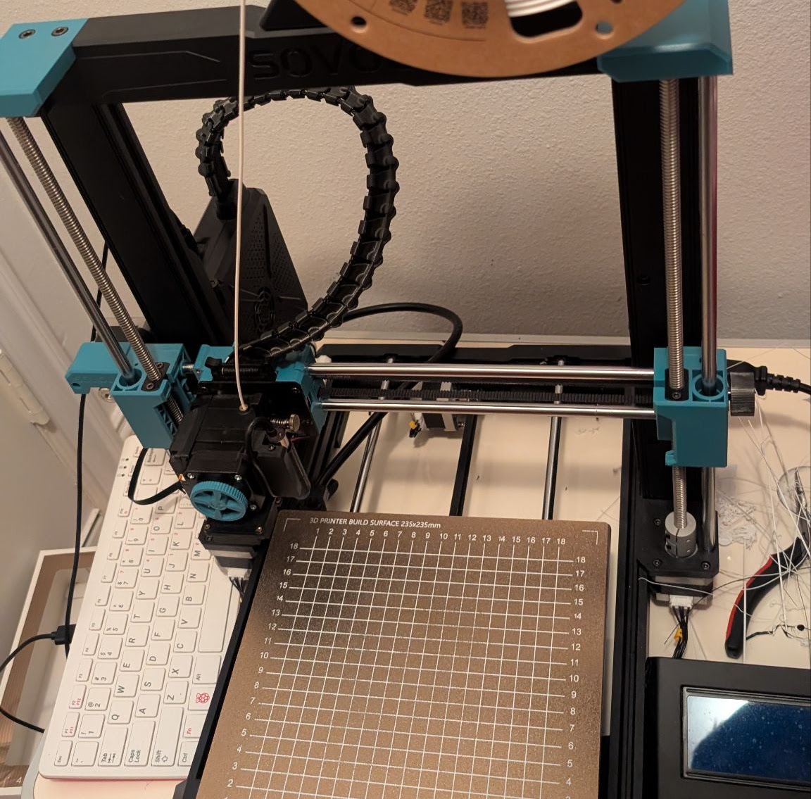
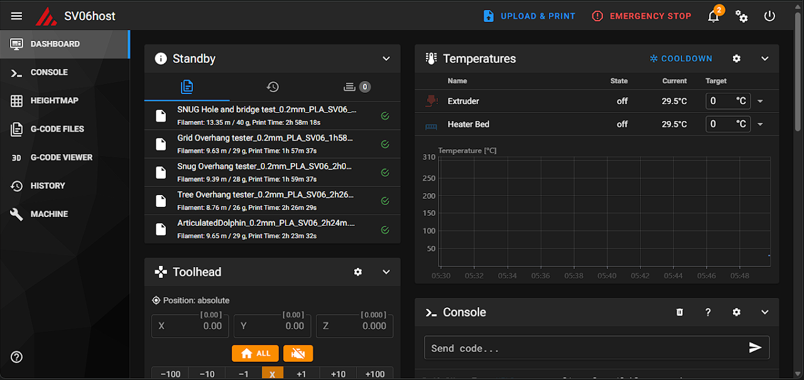
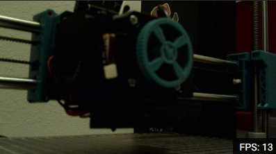

03 — ADDITIVE MANUFACTURING
SV06 Printer Systems Integration
Converted a Sovol SV06 from stock Marlin firmware into a Klipper-based prototyping system hosted on a Raspberry Pi 400.
Overview
Upgraded my Sovol SV06 from its old Marlin firmware to a new Klipper-based system hosted on a Raspberry Pi 400 and set up a browser-based control interface using Mainsail and Moonraker for remote printer management.
Impact
Previously, the printer only accepted SD cards for print files, but with a network-controlled printer, prints can be started, calibrated, and viewed from anywhere in the world,
PHOTO DOCUMENTATION
Build and configuration



VIDEO
Printer operation
Remote printer calibration
TECHNICAL NOTES
System components
- Sovol SV06 FDM 3D printer
- Raspberry Pi 400 as the Klipper host
- Klipper firmware and printer configuration
- Mainsail web interface and Moonraker API service
- Custom tuning and configuration work, including StealthChop-related settings